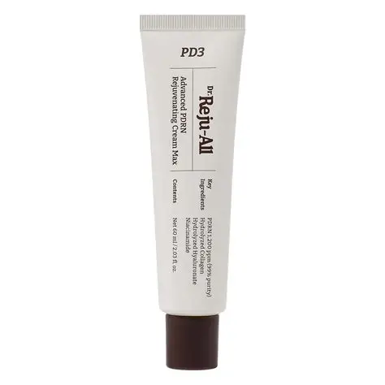
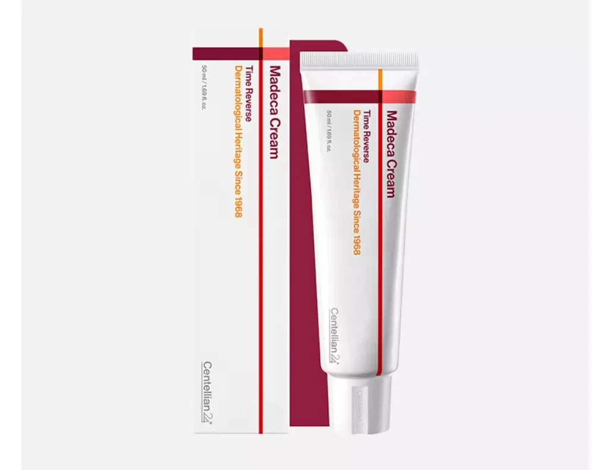
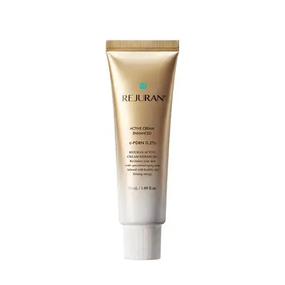

レーザーや針を使ったあとの肌は、いわば一時的に傷ついた状態。この時期の過ごし方で、回復の早さもダウンタイムの長さも、効果の持続期間も変わります。基本ルール4つと、江南の薬局で実際にすすめられたクリーム3本の記録です。
レーザーや針を使った施術後の肌は、いわば一時的に傷ついた状態です。普段よりずっとデリケートで、外部からの刺激に敏感になっています。
この時期に正しいケアをするかどうかで、回復の早さ、ダウンタイムの長さ、そして施術効果がどれだけ持つか——そのすべてが変わってきます。せっかく高いお金と貴重な渡韓日程を使ったのに、帰国後のケアで台無しにしてしまうのは本当にもったいない。
「施術してもらったら終わり」ではありません。ホームケアこそが施術の一部だと思ってください。クリニックで受けた1時間より、そのあとの2週間のほうが、仕上がりを左右することもあります。
商品を選ぶ前に、まずは基本のお約束から。どれだけ良いクリームを買っても、ここが崩れていると効果は出ません。
施術後の肌は水分を保つ力が落ちています。何を足すか迷ったら、まず保湿。とにかくここが命です。
レチノール、ピーリング系、強い香料は、肌が落ち着くまで一旦封印。攻めのスキンケアは回復してから。
施術後は色素沈着が起きやすい状態。日焼け止めを塗らないと、シミを取りに行った施術が逆効果になりかねません。
気になっても摩擦はNG。かさぶたを剥がすのは論外です。触りすぎが、いちばん身近な刺激になります。
ここからは、実際に韓国・江南エリアの薬局やオリーブヤングで人気の商品を3つ紹介します。どれも施術後の敏感になった肌を想定して設計されたアイテムです。
これは私自身、江南の薬局で「施術後のケアにおすすめのクリームってありますか？」と聞いたときに、スタッフさんが迷うことなく差し出してきた商品です。「施術後ならこれ！」と、ほぼ即答でした。
最大の特徴は、医師と薬剤師が共同開発していること。一般的なコスメブランドとは成り立ちが違うぶん、施術後という場面に対しての信頼感があります。
薬局で手軽に買えるのも嬉しいポイント。渡韓中に立ち寄れる機会があれば、ぜひ棚をチェックしてみてください。

ツボクサエキス（シカ成分）を配合した、肌再生ケアに特化したブランド「センテリアン24」のクリームです。日本でも名前は知られていますが、韓国では価格もラインナップも段違いです。
「肌がよわよわな私が、一度も荒れたことのない商品」と言えるくらい、当たりの柔らかいアイテム。強い成分を避けたい施術直後の数日間に、安心して置いておける一本です。

美容好きなら一度は聞いたことがあるであろう「リジュラン」ブランドのコスメライン。クリニックで受けるリジュラン注射と同じブランドが出しているスキンケアです。
保湿力の高さが持ち味で、乾燥しやすい施術後の肌をしっかり抱え込んでくれます。注射のあとの数日、肌が水分を保てなくなっている時期にちょうど良い濃度感です。

施術後のケア方法は、受けた施術の内容によって変わります。レーザー後とダーマペン後では、触っていいタイミングも違います。担当の先生から指示がある場合は、この記事の内容よりもそちらを最優先してください。
帰国後も、渡韓で手に入れた肌をそのままキープできますように。施術後のホームケアは、施術そのものと同じくらい大切です。
※本記事は個人の体験と現地での見聞に基づく感想であり、効果・使用感・価格・在庫状況には個人差および変動があります。商品の成分がご自身の肌に合うかどうかは、必ずパッチテストや医師への確認のうえでご判断ください。施術後のケアについては、施術を受けたクリニックの指示を最優先としてください。
体験記事の一覧にもどる